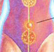
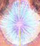
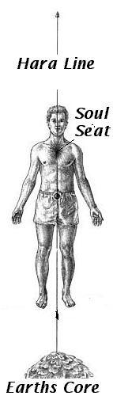

Hara Line And Core Star Meditation
Hara Laser LineIntroduction The wingmaker uses the cosmic hara line to align to the higher powers and the prime creator. It is also a good way to centre yourself before starting a training session. You can also use the hara line to charge the physical body with fifth force energy and illusional energy by focusing on drawing them into the physical body and your energy system.Physical Exercise Step One Step Three  |
Step Four
Once you have made a connection to the earth I want you to focus your
attention on the tan tein at the centre of your physical body. The tan tein
should be charging from a brownish colour to a reddish colour as you draw energy
from the earth. Just Like the image above.
Step Five
Now visualize that the connection between the earth and your tan tein is very
strong and that the laser line is very powerful.
| Step Six Now I want you to visualize that the laser line between the earth and the tan tein is running up into the soul seat/source ID point on your physical body. The soul seat looks like a diffused light around a candle but it is purple blue in colour and can be found in the chest area of the body and will look similar to the image below. |
 |
| Step Seven Then I want you to see the laser line running from the soul seat out through the crown chakra at the top of your head and into the small upside down funnel just above your head. The is called the gods head and is the connection to the prime creator.
Step Eight Step Nine |
 |
Physical Exercise
| Step One First I want you to get comfortable and relax.
Step Two |
Step Three
Now I want you to feel at one with yourself and in your own time see that star
expanding throughout your physical body and out into your auric field. Stretch
out your feelings and feel the pure essence of who you really are also feel the
light energy of this core star healing both your physical body and your energy
system.
Step Four
Now feel at one with the world around you and the prime creator and
remember that this energy is the real you.
Step Five
Then in your own time open your eyes. How do you feel ?